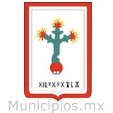

Bienvenido a: Santa Isabel Xiloxoxtla
Santa Isabel Xiloxoxtla es un municipio perteneciente al estado de Tlaxcala. Comprende una superficie de 5,450 kilómetros cuadrados lo que representa el 0.13 por ciento del total del territorio estatal. Está ubicado en el Altiplano central mexicano a 2280 metros sobre el nivel del mar.